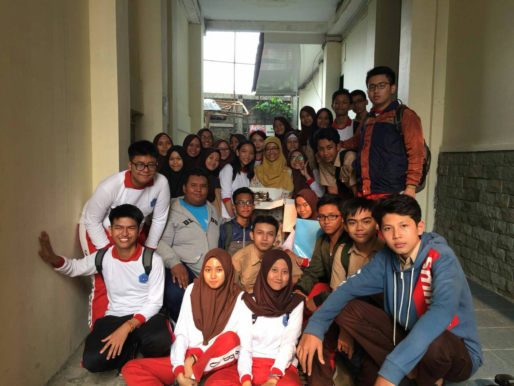
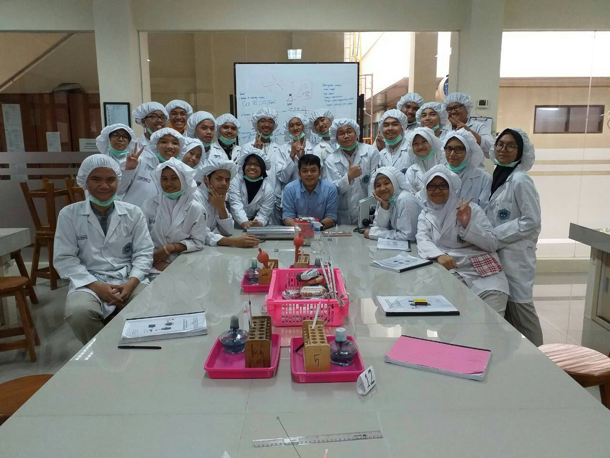

Hello World!

Foto diatas merupakan foto keluarga ku disebelah kiri ada adikku satu-satu nya,disebelah lagi ada ibu ku,ada ayah ku,dan yang paling kanan pastinya aku. Di foto itu,kami sedang pergi berlibur ke kawah putih, menempuh perjalanan yang cukup panjang dan melelahkan.
Tadi udah liat keluarga ku nah,sekarang mau aku tunjukkin nih foto keluarga ku di sekolah,jadi semester 1 dan semester 2 awal aku masih termasuk kelas 11-1. Kelas yang menurutku nyaman banget,dari mulai anak-anaknya sampai wali kelas tercinta,ibu rika. Di kelas 11-1 aku bisa jadi diriku sendiri dan mudah bergaul dengan teman-teman kelasku.Anaknya pun benar-benar humoris.
Sekarang kelas 11 kedua ku. Yaitu,Kelas PSG entah,aku tidak pernah tertarik untuk mengikutin program dual system dan tidak pernah didaftarkan oleh wali kelas. Tetapi,tiba-tiba muncul daftar yang salah satunya,ada nama ku disitu.Ya,mungkin memang jalanku untuk berpisah dengan kelas 11-1 dan bergabung dengan kelas 11-psg.Semoga aku selalu diberi kesehatan dan kelancaran untuk tetap berjuang dikelas yang dipenuhi aura kompetisi.Amiinn